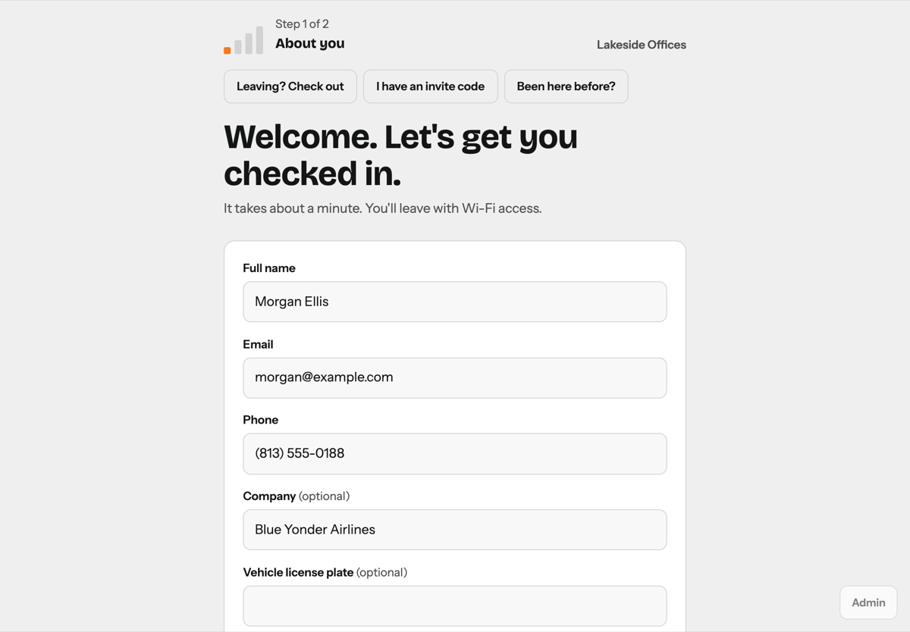

Visitor Desk
By Terry Henry
Visitor check-in and Wi-Fi for RUCKUS One, as a ready-to-run virtual appliance for VMware ESXi and vSphere. Visitors check in on a lobby tablet. Visitor Desk creates their Wi-Fi access in RUCKUS One, keeps a record of the visit and tells their host they've arrived.
Key features
- Wi-Fi at check-in. Each visitor gets a RUCKUS One guest pass, their own DPSK password or the shared password, shown as a QR code that joins in one scan, with the device limit and expiry you choose.
- Fast check-in on a tablet. Name, contact details, who they're visiting, a photo and an ID photo through the tablet camera, the agreement and an optional signature, plus your own questions (short or long answer, number, date, choice list, tick box), in the order you choose, shared with every tablet if you like. English, Spanish and French. A built-in on-screen keyboard for touch-screen PCs that don't bring up their own.
- Expected visitors. Invite codes by email or text, multi-day passes for contractors, CSV import, and returning visitors who fill in their details from an earlier visit.
- Hosts in the loop. Arrival alerts by email, text, Slack or Teams, a personal page for each host to add their own visitors, and an On my way button the visitor sees on the kiosk.
- Who's on site, and where. Check-out at the kiosk with a 6-digit code, an on-site list with each visitor's devices and access point, RUCKUS One floor plans, and Probably left when their devices leave the Wi-Fi.
- Emergencies. Text and email everyone on site, then a shared roll call where staff mark people safe.
Featured in The RUCKUS Vibe, October 2026.